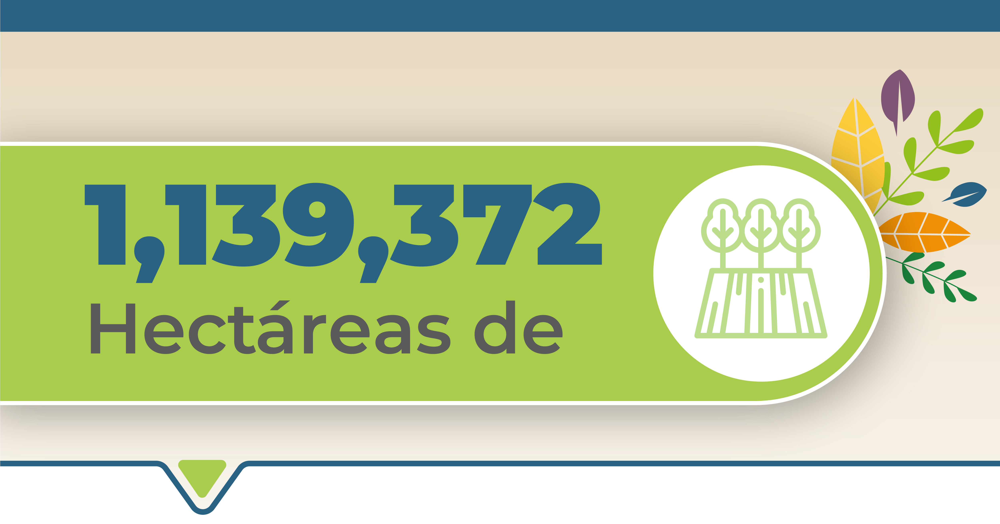
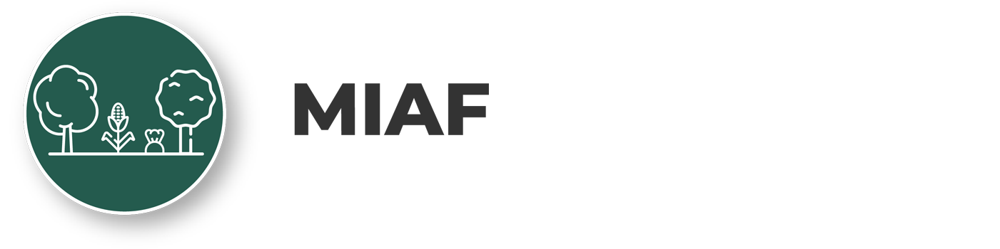
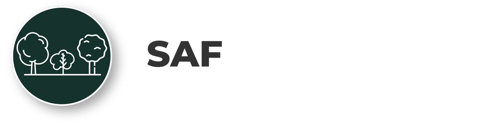
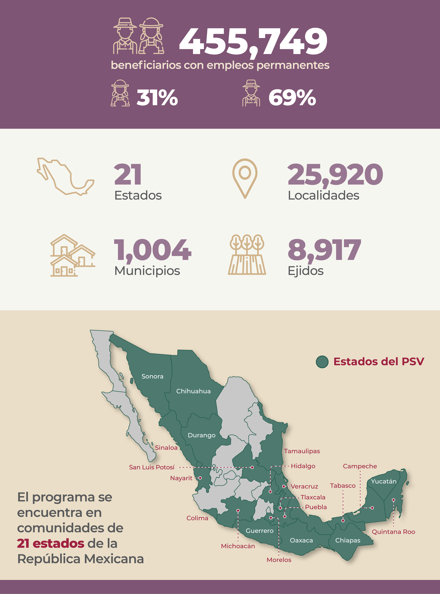
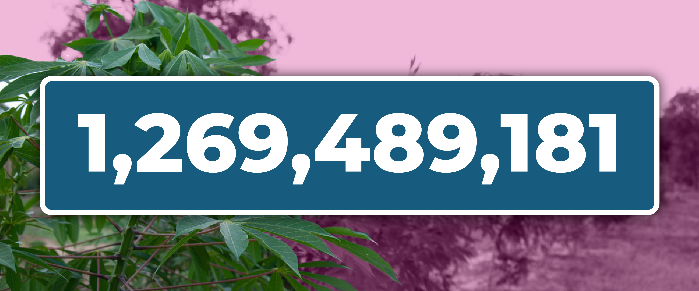
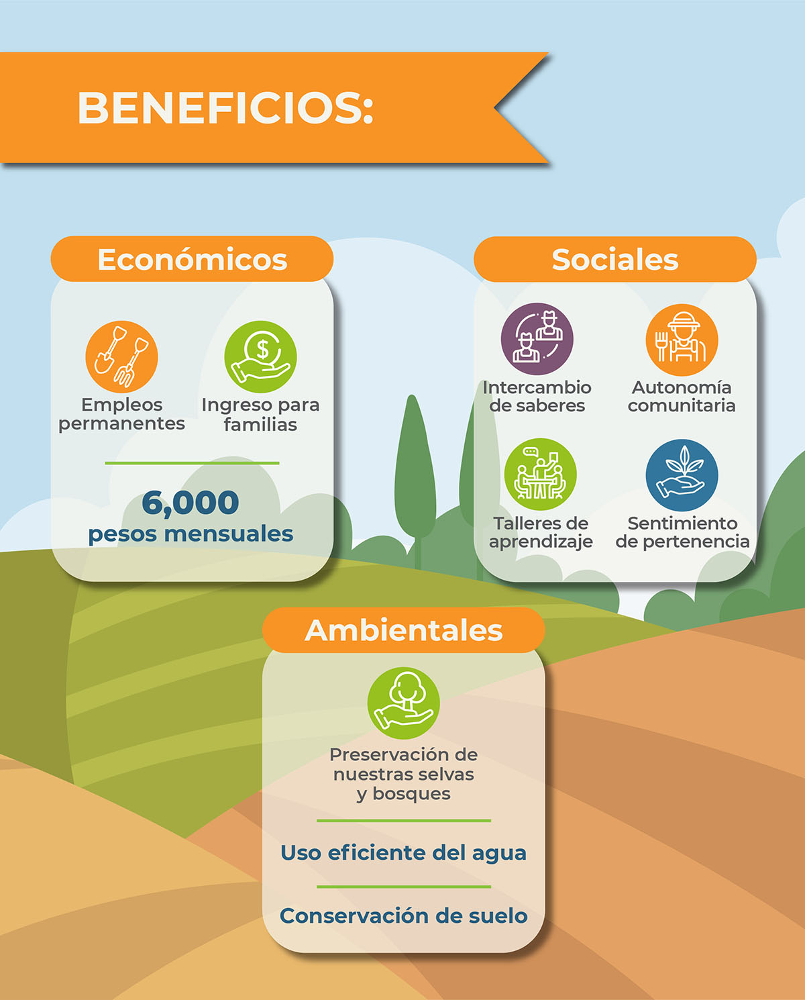
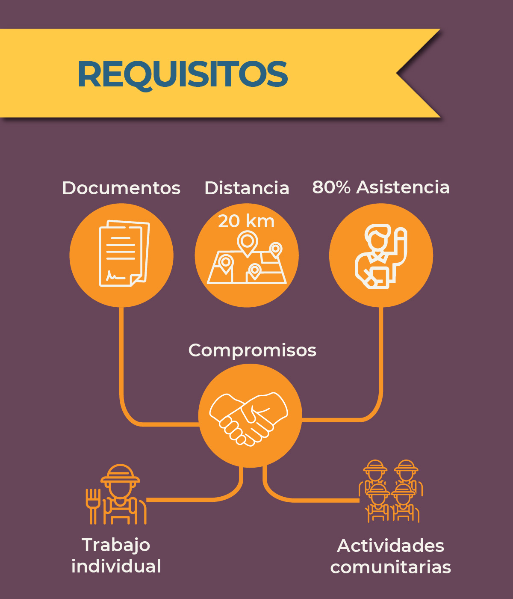
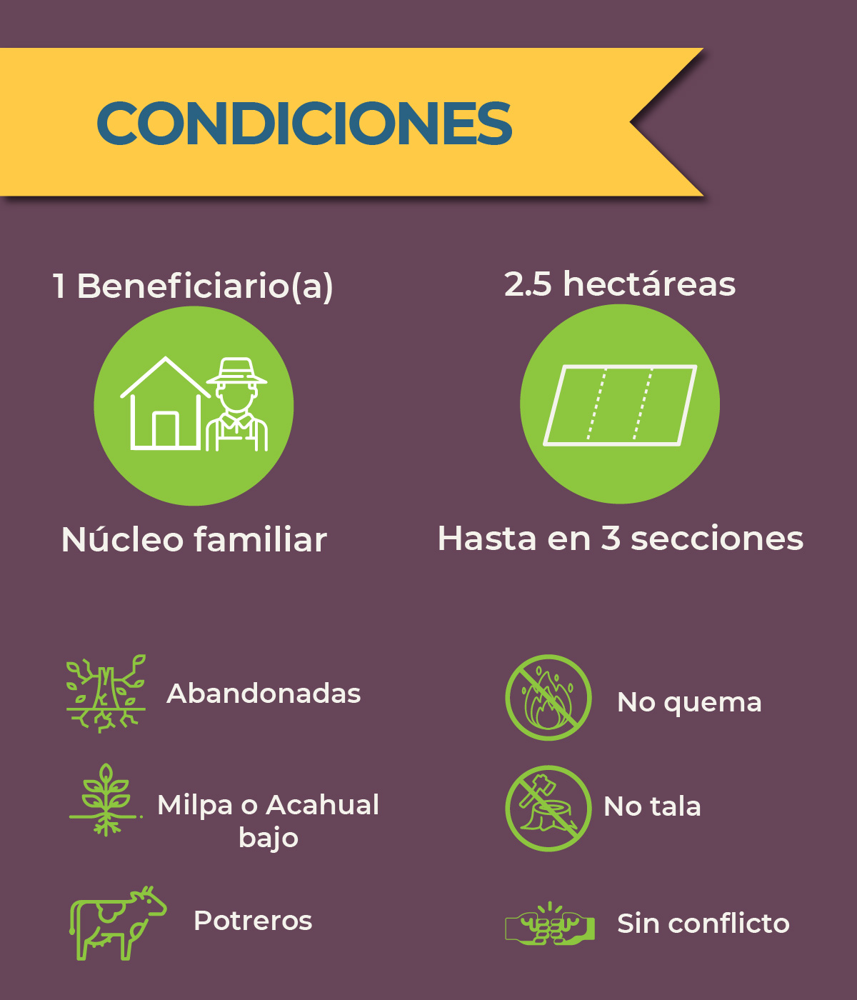

Sembrando vida.
Busca contribuir al bienestar social de sembradoras y sembradores a través del impulso de la autosuficiencia alimentaria.

Objetivo.
Sembrando Vida es un programa del Gobierno de México que busca contribuir al bienestar social de sembradoras y sembradores a través del impulso de la autosuficiencia alimentaria, con acciones que favorezcan la reconstrucción del tejido social y la recuperación del medio ambiente, a través de la implementación de parcelas con sistemas productivos agroforestales.
El programa, busca atender dos problemáticas: la pobreza rural y la degradación ambiental. De esta manera, sus objetivos son rescatar al campo, reactivar la economía local y la regeneración del tejido social en las comunidades.
Sembrando Vida es un programa integral que busca lograr comunidades sustentables que parte de Componentes Sociales, Económicos y Ambientales. Con esta Visión Integral dinamiza la diversidad socio ambiental y cultural de las comunidades, contribuye a la generación de empleos, al cuidado del medio ambiente y favorece una mayor cohesión social.
Esto se logrará a través de fortalecimiento de las bases productivas mediante la siembra de:
Esto logrará:
Sistemas Agroforestales de árboles maderables y frutales (SAF).
Milpa Intercaladas con Árboles Frutales (MIAF).
Donde hasta el momento, se tienen contabilizados 720,527,840 plantas en parcela y 548,961,341 plantas en viveros comunitarios.
Datos generales del programa.
¿Quienes participan?

Viveros
Beneficios
Requisitos
Condiciones de parcelas
Biofábricas
Instalación para elaborar biofermentos, biopreparados, caldos minerales y otras sustancias agroecológicas que se utilizan para promover la agricultura orgánica.
SAF
Sistemas Agroforestales de árboles maderables y frutales. Serie de sistemas y tecnologías para el uso de la tierra en las que se combinan árboles con cultivos agrícolas y/o pastos, en función del tiempo y el espacio para incrementar y optimizar la producción en forma sostenida.
MIAF
Milpa Intercalada entre Árboles Frutales. Es un Sistema Agroforestal (SAF) de cultivo intercalado, que tiene como propósitos, la producción de maíz y frijol como elementos estratégicos para la seguridad alimentaria de las familias rurales, incrementar el contenido de materia orgánica, controlar la erosión hídrica del suelo y con ello lograr un uso más eficiente del agua de lluvia.
CAC
Comunidades de Aprendizaje Campesino, conformadas por un promedio de 25 sujetos de derecho que se reúnen para la generación de conocimiento a través del intercambio de experiencias y la formación.
Viveros comunitarios
Instalaciones para cultivar y proveer las plantas que serán utilizadas en el SAF y MIAF, las cuales estarán ubicadas cerca de las Unidades de Producción y serán atendidas por las/los sujetos de derecho del Programa.